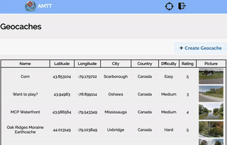
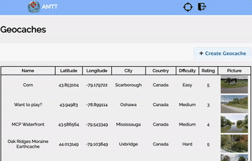

Alexandar Mihaylov
Database Developer
Currently a backend developer for IBM's Db2 database query compiler with emphasis on query optimization. Completed a Computer Science Masters (MSc) in query problem determination and re-optimization through the use of distributed computing using an adaptive knowledge base. Have both course and practical experience working with Docker, Cloud, Machine Learning, Web, and Android development. Also enjoy playing badminton, skateboarding and dabble in bike repair in my spare time.
Skills
Databases
- SQL
- Statistics
- Cardinality
- Index creation
Docker
- Containerize
- Docker Swarm
- Compose
Distributed Computing
- Apache Spark
- Hadoop Distributed File System
- MapReduce
- Cloud
Work Experience (6)
Backend C++ development in Db2's (Linux Unix Windows) query compiler optimizer engine
- Improvements and adjustments in the cost model's cardinality estimates
- Analyzing access plans to detect performance bottlenecks and potential improvements
- Problem determination through runtime analysis of traces and I/O statistics
- Providing level 3 development support to customers including: performance degradations, crashes and escalations
- Test case design, writing functional test cases in Perl, regression and performance QA testing
- Using git, docker and unix-like environments for day-to-day tasks
Completed my MSc in collaboration with the IBM DB2 Optimizer team as part of the Center for Advanced Studies (CAS).
- Developed dGALO - a system that learns and re-optimizes problematic queries in DB2
- Operated in a distributed environment using Apache Spark and Hadoop Distributed File System
- Employed custom partitioning and load-balancing strategies using subquery metadata
- Performed clustering and other optimizations to reduce massive search space
- Publication: CIKM '21
Developed Web application for users to run varying Order/Functional Dependency(OD/FD) discovery algorithms
- Integrated several OD/FD algorithms including: TANE, ORDERS, and FASTOD in a web system
- Users are able to run these algorithms with various datasets through a web interface
- Web interface provides varying parameters that users can toggle and adjust prior to execution
- Publication: https://ieeexplore.ieee.org/abstract/document/8509397
Worked in the IT department in GM Canada Headquarters as both software and hardware support. Completed two separate four month co-ops during the summer months of 2015 and 2016.
- Created hybrid Android/iOS app for the Connected Customer Team using Apache Cordova
- Performed maintenance on C# tool used to generate monthly IT Live statistics reports
- Fixed and ensured functionality on EDW application that generated monthly sales reports.
- Created Visual Basic Application used by employees to submit requests to the Brand Team
- Made web based jeopardy controller and display used in Connected Customer annual presentation
- Conducted an in-house audit on all the shared folder on Canadian based servers
Worked in the manufacturing plant by assisting with the electronic assembly of transponders, and then transferred to the accounting department to aid with accounts payable
- Prepared, validated and inputted invoice batches on a daily basis to ensure process of payments
- Reviewed, reconciled and completed payments on vendor invoices and employee expenses
- Resolved any discrepancies or inquires with vendors regarding invoicing and payments
- Prepared biweekly account summaries to review and process payments on due invoices
- Disbursed and recorded entries of all petty cash transactions made by employees
- Processed weekly cheque runs by printing, cutting, and mailing cheques to vendors
- Assisted in monthly AP account closing as well as GL Reconciliations
Worked as technical support in my local electorial district during the provincial and federal elections
- Responsible for all field system setups and configurations in the Returning Office
- Tested all hardware and software packages, including Windows and Electoral applications
- Managed preparation and production of electoral district management reports and the List of Electors
- Maintained, managed and conducted daily backup of the Electoral District database
- Provided technical support for all automated systems in the returning office
Education (2)
- Advanced Topics in High-Performance Computing (Machine Learning)
- Advanced Topics in Software Design
- Survey of Computer Science Research Topics & Methods
- Collaborative Design & Research
- Advanced Topics in Information Science
- Web Application Development
- Mobile Devices
- Database Systems & Concepts
- Big Data Analytics
- Analys. & Design of Algorithms
- Operating Systems
- Compilers
Awards
The Ontario Graduate Scholarship (OGS) program encourages excellence in graduate studies at publicly-assisted universities in Ontario. Since 1975, the OGS program has been providing merit-based scholarships to Ontario’s best graduate students in all disciplines of academic study. The scholarship program at U of T is jointly funded by the Province of Ontario and the University of Toronto. The Province allocates OGS awards to universities specifying the number of awards that each may offer to their students annually.
The Ontario Graduate Scholarship (OGS) program encourages excellence in graduate studies at publicly-assisted universities in Ontario. Since 1975, the OGS program has been providing merit-based scholarships to Ontario’s best graduate students in all disciplines of academic study. The scholarship program at U of T is jointly funded by the Province of Ontario and the University of Toronto. The Province allocates OGS awards to universities specifying the number of awards that each may offer to their students annually.
Internal Award
Internal Award
Internal Award
projects
A simple LCD display hooked up to a raspberry pi showing a rotating set of city tempoeratures via weather API
A python implementation using Machine Learning and OpenCV to detect the expressions of individuals in a live video feed. Has mutli-face detection and can detect emotions such as: Angry, Disgust, Fear, Happy, Sad, Surprise, Neutral.
Predict from an image, if a driver is distracted, and if so what that distraction is (e.g. texting, talking on the phone, doing their makeup). Built using TensorFlow, Keras, and VGG16 as a base neural network.

Developed Web application for users to run varying Order/Functional Dependency(OD/FD) discovery algorithms
A golang implementation of an AI bot playing Ultimate Tic Tac Toe hosted on The AI Games to compete against other people's hosted bots. The bot uses the Monte Carlos Tree Search, a heurisitc search based algorithm that uses a few modifications and optimizations in order to play the game.
dynOBD is an android application that keep track of statistics about any
given car trip. It uses bluetooth to connect to an OBDII(On-board Diagnostics)
dongle that is connected seperately to the car's DLC (Data link connector).
It also provides a live data feed showing the current speed and throttle
of the car.
A C++ automated teller machine terminal for simple banking transactions front end. A Java overnight batch processor back end, meant to maintain and update a master banking account file. The whole system has continuously maintained test suites for quality control.
A website that allows users to register and add/track geocache locations. It uses the google maps api to track and display maps of the different geocache locations added by users.
 

Hybrid Cordova mobile application made with small team at McHacks 2015. The app aids in scrap booking memories by reminding the user to take pictures periodically, which can be viewed at a later time.
Languages
English
Bulgarian
French
Interests
Development
- Bikes
- Classical Literature
- Cars